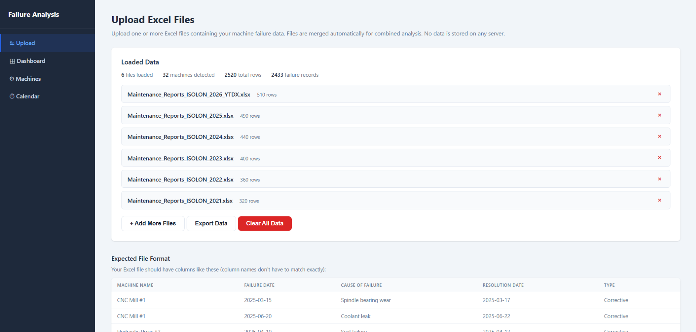
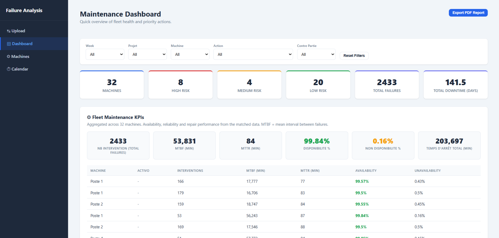
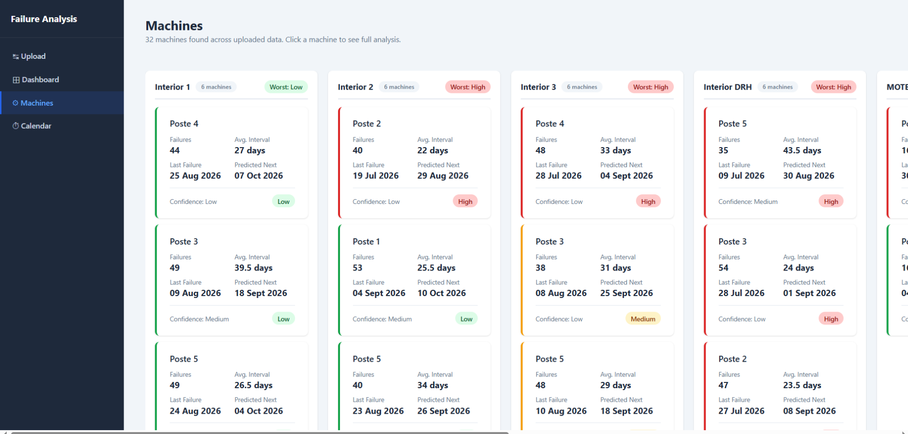
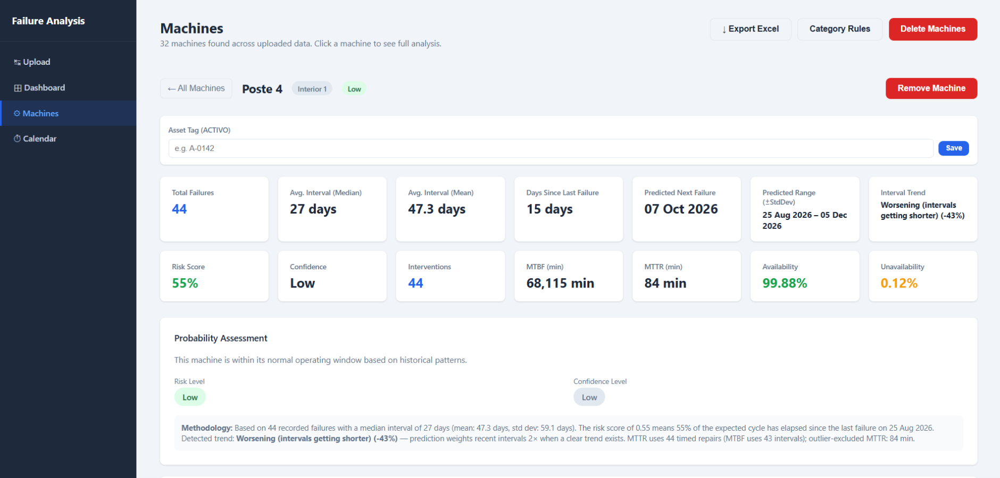
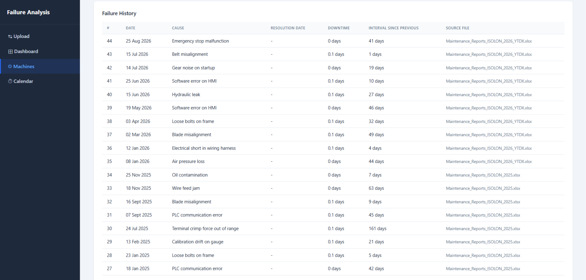
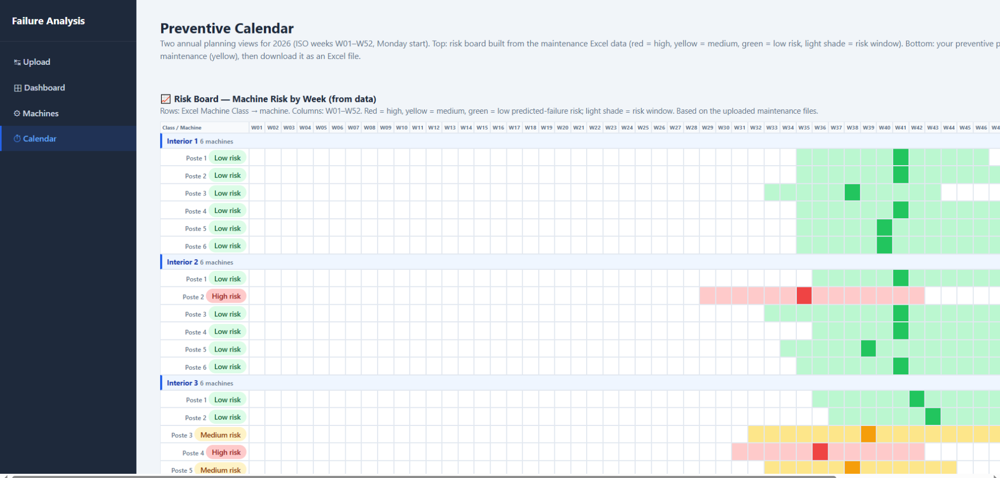
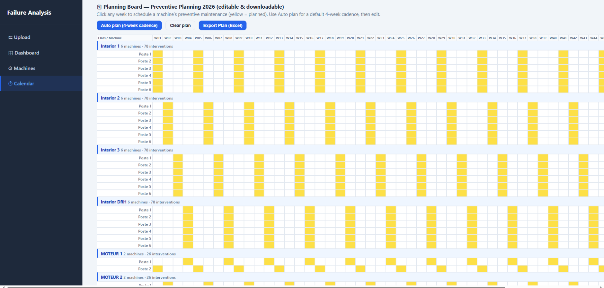
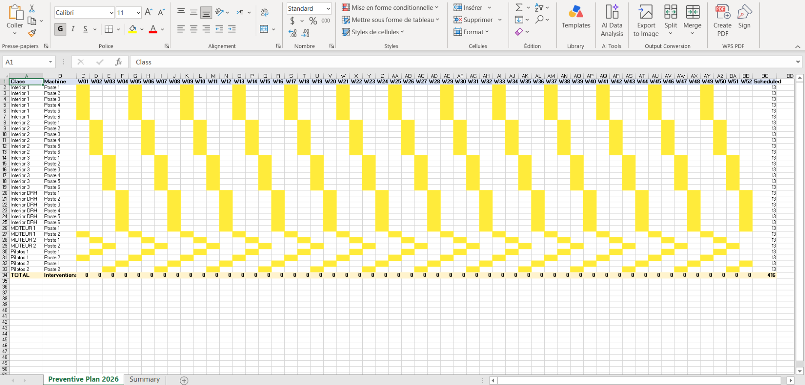

Fujikura, Maintenance Data System








01The problem
Maintenance at Fujikura ran on reaction: failures were logged into Excel files, but each file had its own schema, so records were not comparable, predictable or planable. The data was being collected, it just was not usable.
02What I did
I designed and built the Maintenance Failure Analysis Tool, a browser-only application (open index.html, no server) that reads Excel maintenance logs and turns them into machine risk analysis, forecasts, dashboards and a yearly preventive plan. Everything persists in localStorage.
- Upload & column mapping: drag-and-drop .xlsx/.xls files; column roles are auto-guessed and can be corrected, and files with different schemas can be mixed without losing rows.
- Failure analysis: per-machine corrective failure counts with repeat-row dedupe, mean/median MTBF, standard deviation, MTTR, downtime, availability, trend, next-failure forecast with risk window, and a High/Medium/Low risk level with confidence, machines under 2 failures are marked insufficient.
- Machines page: machines grouped by class as risk-colored cards, detail view with full history, manual add/remove, bulk delete, asset tags (ACTIVO), and Excel export grouped by category.
- Dashboard: filters by week, class, machine, action and counterpart; KPIs; downtime, intervention and MTTR charts; a backtest of predicted vs actual failure dates; root-cause ranking and a priority list of machines to act on.
- Calendar: 2026 risk board (W01–W52) plus a planning board with 4-week cadence auto-plan, snapshotted so it survives data clears, preventive task recurrences and export of isolon-2026-preventive-plan.xlsx.
- Data management: merged export, clear-all, and full state persistence across reloads.
03Result
Excel logs became a single decision view: risk-colored machines, next-failure predictions, a full 2026 preventive plan and a dashboard that maintenance and production can both read. The best data system is the one people actually use.